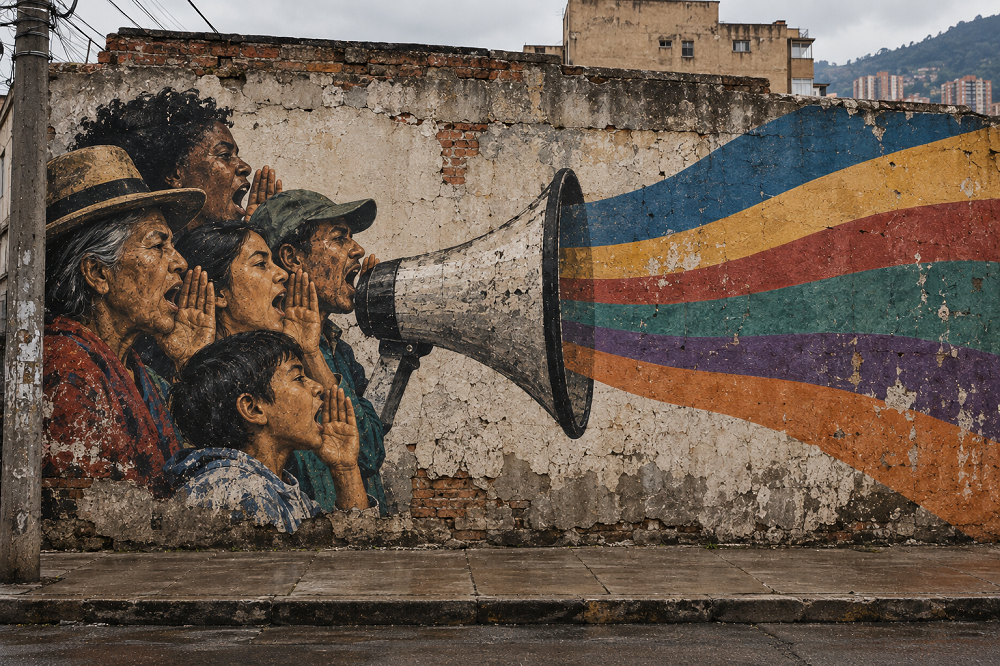

Home > Blog The Log of a Librarian > Community-Centered Librarianship With a Decolonial Turn (12)
Community-Centered Librarianship With a Decolonial Turn (12)
Amplifying Local Voices in Global Spaces
Circulation, Translation, and the Politics of Scale
This post is part of a series that reclaims community-centered librarianship from its institutional distortions, returning it to its roots in struggle, mutual aid, and collective survival. It treats libraries not as neutral services but as contested infrastructures shaped by power, resistance, and memory, and explores librarianship as solidarity work grounded in real communities, real conflicts, and the ongoing tension between institutional control and collective autonomy. Check all the posts in this section's index.
Local Knowledge Beyond the Local
Community-centered librarianship frequently involves knowledge whose significance is strongly tied to place. Local histories, oral accounts, neighborhood records, organizational documents, community publications, photographs, audiovisual materials, and other forms of documentation acquire meaning through the social relations in which they were produced and used. Their relevance may depend on knowledge of particular people, events, conflicts, institutions, landscapes, or forms of language that are already familiar within the community.
Tensions emerge when these materials begin to circulate beyond that context. Digitization, online publication, exhibitions, academic partnerships, international networks, cultural programs, and funding initiatives can make local knowledge accessible to broader audiences. Such circulation can provide recognition, resources, connections, and opportunities for exchange. But it can also alter the conditions under which the material is interpreted.
The question, then, is not whether local knowledge should circulate beyond the community. In many cases, wider circulation is actively desired. What matters are the conditions under which that circulation takes place, and the extent to which materials must be reformulated in order to become intelligible within external institutional environments.
The Transformation Produced by Scale
Knowledge does not move unchanged from one scale to another. Materials that require little explanation locally often need extensive contextualization when presented to unfamiliar audiences. References that are obvious within a neighborhood, association, linguistic group, or political movement may be unintelligible elsewhere. Local terminology may require explanation or translation. Events may need historical background. Relationships between documents may need to be reconstructed.
These are normal problems of communication, but the solutions adopted are consequential. Context can be condensed in ways that simplify complex situations. Terms may be replaced by broader categories. Political disputes may be summarized as cultural differences. Internal disagreements may disappear from public presentations because they are difficult to explain or because institutions prefer coherent narratives.
The resulting version may remain factually accurate while nevertheless changing the significance of the material. A community history organized around disputes over land, labor, housing, migration, or public services can become, at another scale, an account of local identity or cultural heritage. The information has not necessarily been falsified, but the relationships that gave it meaning have been reorganized.
Community-centered librarianship has to consider scale as part of documentary practice. Making something available beyond its original context requires decisions about what accompanying information must travel with it and what forms of simplification are acceptable.
Institutional Languages of Legibility
Wider circulation also brings community knowledge into contact with institutional vocabularies. Cultural agencies, NGOs, universities, funding bodies, heritage organizations, and international programs operate through categories that allow projects from very different contexts to be compared, administered, financed, and communicated.
Terms such as participation, empowerment, resilience, heritage, diversity, inclusion, traditional knowledge, cultural identity, and capacity building have become common within these environments. They are not meaningless, and in particular situations they may describe aspects of community work accurately. The difficulty begins when they become the principal language through which local experiences must be presented in order to obtain recognition or support.
A locally specific problem may then be rewritten so that it corresponds to an available institutional category. A community initiative becomes a heritage project; a political demand becomes cultural participation; a history of displacement becomes resilience; an autonomous documentary practice becomes capacity building. The reformulation facilitates communication with institutions, but it may also alter what the initiative is understood to be.
This is one of the mechanisms through which folklorization can occur without any explicit attempt to romanticize a community. Folklorization can result from presenting cultural practices while separating them from the economic, political, and historical conditions in which they exist. Community knowledge remains visible, but the conflicts and relationships that explain it become secondary.
Libraries participating in international or interinstitutional networks need to recognize this pressure. External vocabularies may be necessary for particular administrative purposes, but they do not have to replace the terminology through which communities understand their own practices.
Preserving Context During Circulation
One response is to treat context as part of what is being circulated rather than as supplementary information added afterward. A photograph, testimony, publication, or oral account may require information about the circumstances of its production, its intended audience, relevant events, local terminology, or the relationships among the people involved.
This does not mean producing exhaustive explanations for every external audience, nor does it require eliminating ambiguity. Some forms of knowledge depend precisely on distinctions that cannot be translated completely into standardized categories.
Community-centered documentary practice can therefore preserve several descriptive layers. Local terminology can coexist with broader terms used for discovery. Original names can remain visible alongside translations. Community descriptions can be retained even when institutions require additional metadata. Different interpretations of the same material can be documented without forcing them into a single synthesis.
Such arrangements allow materials to participate in wider systems without requiring local description to disappear. The objective is not perfect equivalence between different vocabularies, which may be impossible, but sufficient contextual integrity for the material to remain connected to the conditions in which it acquired meaning.
Selective Circulation
Greater visibility is often treated as an unquestioned good. Digitization projects, institutional repositories, open-access initiatives, and communication strategies commonly measure success through broader availability, increased discoverability, or larger audiences.
Community materials do not necessarily require maximum circulation, though. Different items may legitimately have different audiences. Some may be intended for unrestricted public access, while others may be appropriate for researchers, residents, members of particular organizations, or people with established relationships to the community. And some information may require temporary restriction because of political conditions, personal risk, unresolved disputes, or concerns about subsequent reuse.
The possibility of selective circulation becomes particularly important online. Once materials are publicly accessible, they may be copied, indexed, downloaded, incorporated into other databases, processed automatically, reproduced in publications, or separated from the contextual information originally provided with them. Subsequent circulation may become difficult to control.
Decisions about amplification should therefore include questions about reuse, attribution, redistribution, translation, commercial exploitation, and future withdrawal. Making community knowledge visible does not require treating every form of visibility as equivalent.
These questions also change over time. Materials considered suitable for public circulation under one set of circumstances may become sensitive under another. Political conditions change, individuals reconsider earlier permissions, community organizations dissolve or reorganize, and new uses of digital material become possible. Systems for wider dissemination should therefore allow decisions about circulation to be revisited rather than assuming that publication permanently settles the matter.
Reciprocity Across Scales
The movement of community knowledge beyond its place of origin also raises questions about what returns to the community. Wider circulation frequently produces benefits elsewhere: researchers obtain material, institutions expand collections, exhibitions acquire content, platforms gain users, organizations demonstrate impact, and professionals develop publications or projects.
These outcomes are not necessarily exploitative. A significant asymmetry develops when circulation is predominantly outward and the institutions through which materials travel accumulate resources, authority, and visibility while the communities that produced them remain peripheral to those benefits.
Reciprocity can take different forms depending on the project. It may involve returning digital copies and documentation, providing technical infrastructure, ensuring continued community access, sharing resources, maintaining attribution, supporting local preservation, or establishing procedures through which communities can revise or challenge the external use of their materials.
It can also mean preserving connections between materials and their sources. When community knowledge appears in external repositories, exhibitions, publications, or networks, information about its provenance and conditions of use should remain visible. Wider circulation should not transform locally produced knowledge into institutionally orphaned content.
Amplification Without Substitution
Amplifying local knowledge requires more than increasing its visibility. It requires attention to what changes when that knowledge enters documentary, institutional, linguistic, and geographic environments different from those in which it was produced.
Some degree of transformation is unavoidable. Materials require description; audiences require context; translation may be necessary; technical systems impose formats; institutions operate through their own administrative vocabularies. The objective cannot be to prevent all mediation.
The question is whether those transformations remain accountable to the knowledge being circulated.
Community-centered librarianship can contribute by maintaining local terminology, preserving contextual information, distinguishing among different conditions of access, documenting provenance, allowing descriptions to remain multiple or contested, and ensuring that communities retain meaningful relationships with materials that circulate beyond them.
Under these conditions, amplification does not require converting local knowledge into a standardized version of culture designed for institutional consumption. Wider circulation can extend the reach of community knowledge while preserving the particular histories, conflicts, relationships, and forms of language through which that knowledge continues to have meaning.